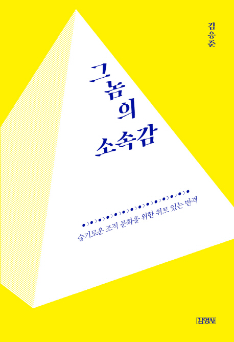

초반은 너무 나같아서 포풍 공감하면서 읽었음 ㅋㅋ
그룹활동, 조직생활 하라면 하지만 선호하진 않습니다
혼자노는게 젤 좋아
집이 최고야 :D :D :D
6
사람을 싫어하진 않지만 가능하면 일만큼은 혼자 하고 싶다.
조직은 안락함을 주는 대신 인간에 대한 냉소를 유발하는 것 같다. 사실 밥을 먹더라도 다 같이 소고기를 구울 바엔 나만의 한 그릇이 보장되는 갈비탕을 선호한다.
7
남들 취향을 고민하다 결국에 이도 저도 아닌 결과물을 만드는 대신 자신이 잘 알고 좋아하는 것에 집중한다.
36
편하게 의견을 주고받자며 시시때때로 부하 직원을 불러 모으는 상사일수록 남의 의견을 잘 듣지 않는다는 건 내가 깨달은 불편한 진실이다.
퇴끼와 북꼬 야매독서모임
북꼬 페이지: